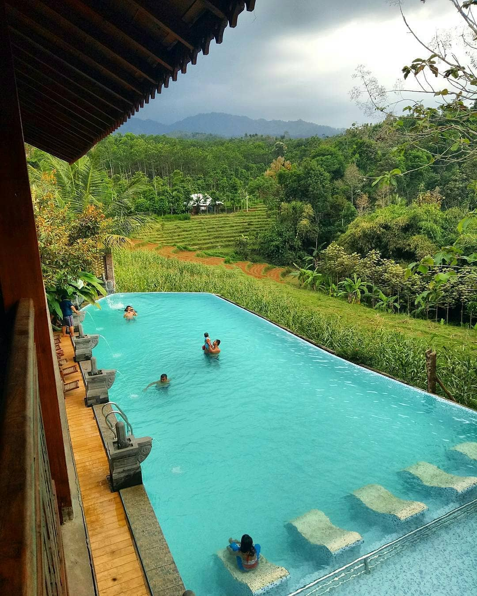

Kedung Cinet is very dynamic, its nature fascinating interest everyone to see it. It is between the greenness forests, flow away in a river and the transparent scraping stones that seem to be whiteness, and make the natural beauty. Kedung Cinet, is a
profile of forest tourism that awaking beauty in Jombang area. It had said that Kedung Cinet is begins from the place bath of soldier and waiting women in Mojapahit era. Kedung Cinet is a place of resting, and take a bath in
transparency water, that flowing away with unwilled forest situation. Besides its beauty panorama of Kedung Cinet and the assess history, make Kedung Cinet has own fascination as a tourism place. Kedung Cinet is located about
10 kilometers from Brantas Ploso Bridge, precisely in Pojok Klitih village. The visitor can see the beautiful scenery in their journey, from fringing the Brantas River until getting through the bridge “joggled" that so preoccupy
if it blown by wind, before arrive at beautiful Kedung Cinet. Kedung Cinet located in the middle of wilderness, commonly visited by a lot of peoples both, from around and domestic tourist. The natural beauty of Kedung Cinet
seems so exciting; stones gap in river stream, stalactite and stalagmite that hang on and the beautiful, green, soft, transparent and cool natural forest panorama.

Kampoeng Djawi is a tourist spot as well as an inn which is equipped with outbound facilities. Kampoeng Djawi is located in Gondang,Carangwulung, Wonosalam, Jombang Regency, East Java, Indonesia. This tourist spot that carries a rural feel is located
at an altitude of 750 meters above sea level with cool air and is surrounded by mountains and a stretch of rice fields around it which makes the atmosphere of Kampoeng Djawi feel so beautiful and natural.

Has a height of 158 meters causing this waterfall to be called the highest waterfall in East Java. The interesting thing from this Tretes waterfall is the natural existence. The visitors have pampered with the waterfall situation that flowing from the
mountain, also the green natural. Stones which being let scatter, the mound that being grow by trees add the fascination around of forest before reaching this waterfall.